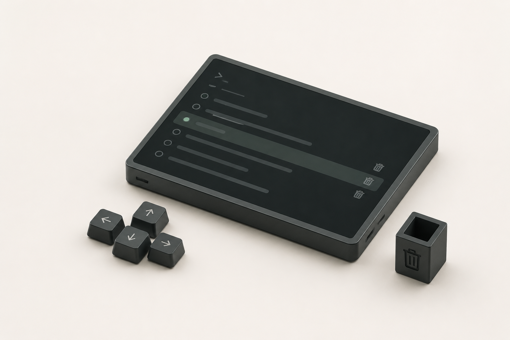
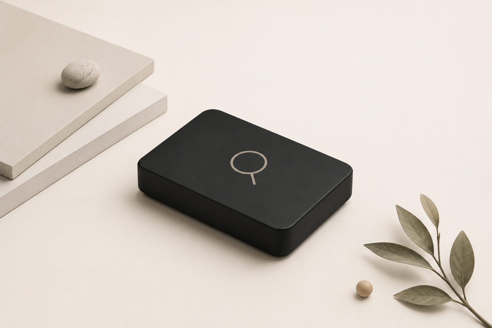
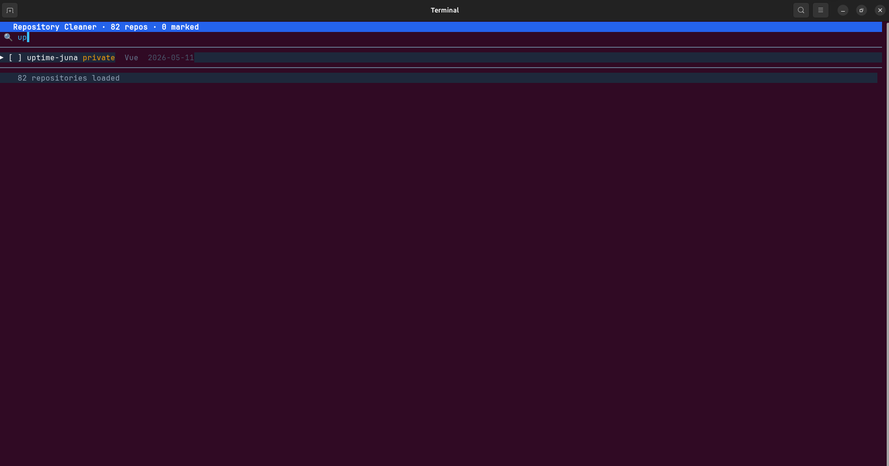
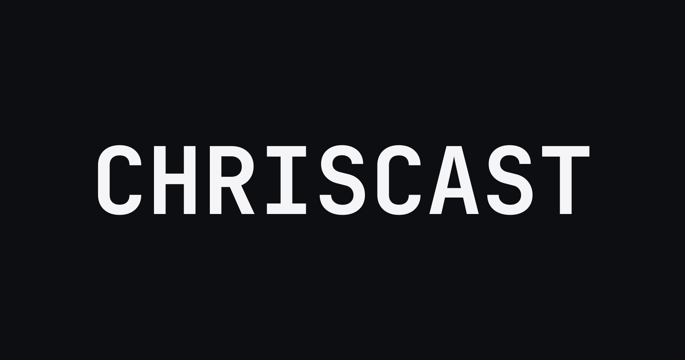
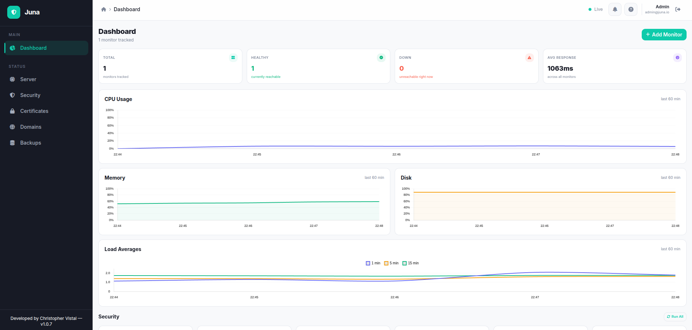
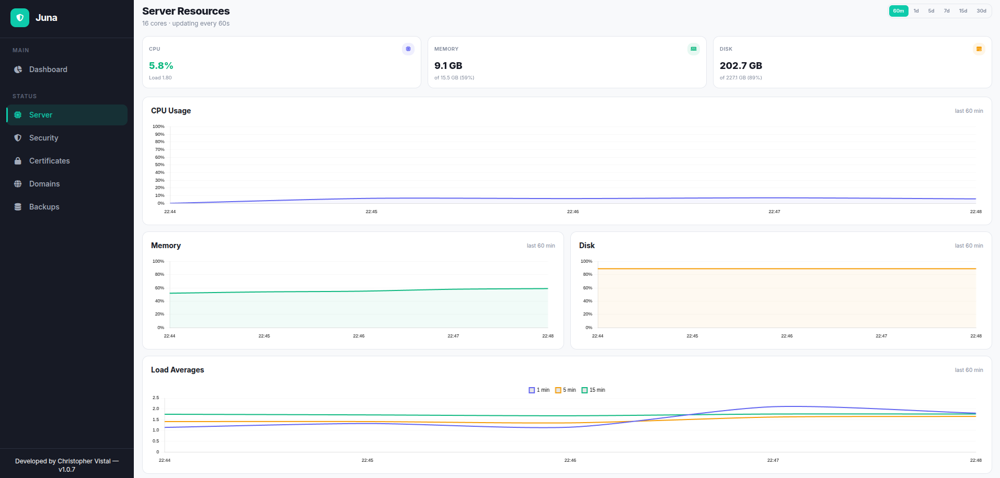
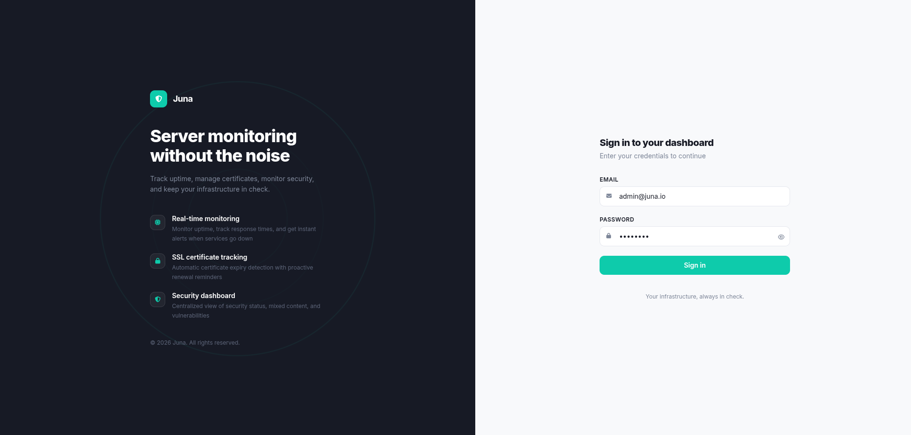

I take products from first commit to production.
Open to full-time remote roles.
Case tracking, document automation, and a client portal in active legal use.
Impact Replaced spreadsheet workflows for an entire firm.A Google Drive for every NEMSU campus, resumable uploads, virus scanning, and signed documents.
Impact Built to centralize records and files across faculty and students.Civil servant records and tourism analytics for the Province of Surigao del Sur, replacing filing cabinets and Excel.
Impact Replaced filing cabinets and Excel. Still in production across the province.Local-first speech-to-text with live waveform feedback. Fully on-device, no audio ever leaves the machine.
Impact Zero cloud dependency. Faster than cloud STT on modern CPUs.Terminal GitHub manager, search, multi-select, and bulk-delete repos with vim-style keys.

Raycast-style file launcher for Linux. Indexes 200K+ files in ~5s with sub-millisecond search.

Self-hosted uptime monitor for a team's services. Scheduled checks, incident surfacing, and live status alerts.
We've all been there, scrolling through GitHub and cringing at a pile of abandoned projects and forgotten forks.
I had over 150 repos and GitHub's UI makes bulk deletion tedious. So I built a TUI app in Go to search, multi-select, and delete repositories in bulk with quick access to details.
In about 10 minutes I cleared out dozens of unused repos and kept only what matters.

macOS has Raycast and Spotlight, but on Linux the launchers I tried felt sluggish on big home directories or needed Python plugins to feel modern.
So I built a pure-Go core: a rune-keyed prefix trie, a trigram inverted index, and an fzf-style scorer with word-boundary, camelCase, and consecutive-match bonuses plus recency boost.
It indexes 200K+ files in ~5 seconds, search latency stays sub-millisecond, and the GTK3 overlay sits behind a Ctrl+Space hotkey with live fsnotify updates.

Built for a friend's team I work with sometimes, to get rid of manual server checks and give them a live view of their server's current situation.
Private repo for now since it has my own auth and alert channels wired in.


